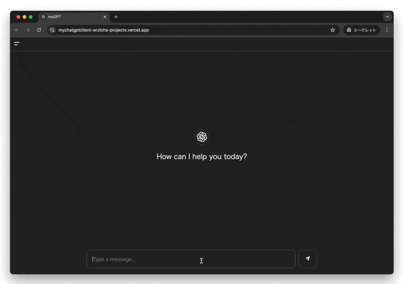

Programming
Here is a bunch of programming projects!
Click on a project's name to get more details.
Personal Projects
Here are some of my personal projects.
→ Wireframe Viewer


A 3D wireframe viewer, taking text as input and displaying it as a 3D object. The object can be rotated and scalled interactively with the mouse.

→ MyChatGPT
A clone of a simplified ChatGPT made with React.js and Express.js using OpenAI's API.
→ .météo
A simple weather app, using the OpenWeatherMap API. My focus was to make a pleasant UI/UX inspired by the Swiss Graphic Style.
Below is the project's embedded webpage:
→ Kizuna
A 2D level-based game made in solo during the GMTK 21 Game Jam in 48h with GameMaker Studio 2.
Below is the game's trailer:
→ My Portfolio Website
This website, made with only pure HTML, CSS and JavaScript. (And lots of love!)
project page→ Richard Holzer's Website

→ Mindful Instagram
A chrome extension that hides non-essential elements on Instagram to help you stay focused on what matters.
School Projects
Here are some highlight projects from my studies at Ecole 42.
→ FdF
A 3D wireframe viewer that takes an object text file as input and outputs an 3D wireframe of it. The library allows to open a window, draw one pixel and manage events.
project page
input file

output
→ minishell
A shell implementation that provides a basic command-line interface for executing commands on a Unix-like system.
project page


→ miniRT
A 3D image rendering program that uses the raytracing technique.
This raytracer is capable of rendering scenes with spheres, planes, and cylinders. Users have the freedom to position the camera, specify ambient lighting, and add a spotlight. The project calculates diffuse lighting on objects based on the provided scene description in a .rt file.
project page
input file

output image
→ webserv
Implementation of a web server in C++ using the HTTP protocol. The server is able to handle multiple clients at the same time, manage GET, POST, and DELETE requests, and can serve static and dynamic content.
project page